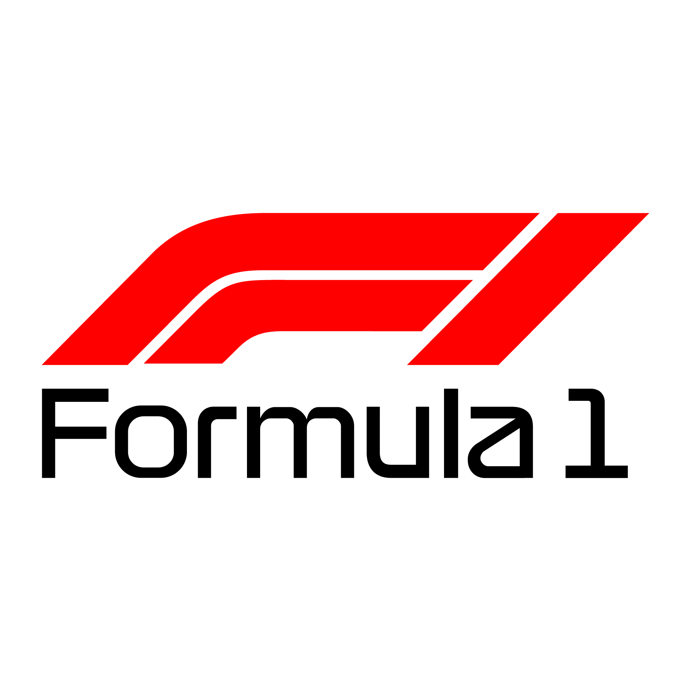

Oracle Red Bull Racing, O Touro Veloz
Dominante nos últimos anos, com desempenho excepcional, especialmente após a chegada de Max Verstappen. Famosa por sua inovação em aerodinâmica e tecnologia.
Mercedes-AMG Petronas Formula One Team, A Flecha de Prata
Considerada uma das equipes mais vitoriosas na era híbrida (2014-2020), com uma forte base técnica e foco em consistência.
Ferrari, O Cavalino Rampante
A equipe mais histórica da Fórmula 1, com um enorme legado de títulos e paixão. Tende a ser imprevisível, alternando entre temporadas vitoriosas e outras de dificuldades.
Aston Martin, O Verde do Rei
Após a compra da Racing Point, se transformou em uma equipe de destaque, com foco em inovação e performance. A introdução do carro verde é sua marca registrada.
McLaren, O Falcão de Asfalto
Famosa por seu histórico vencedor e pelo desenvolvimento de carros rápidos e tecnologicamente avançados. Nos últimos anos, está em processo de reconstrução e busca por títulos.
Alpine F1 Team, A Montanha Ágil
Formada a partir da Renault, esta equipe se destaca por sua estratégia de inovação e pela busca constante por resultados na parte intermediária do grid.
Williams Racing, A Fênix do Circuito
Uma das equipes mais tradicionais, mas que recentemente luta para voltar ao topo. Tem uma forte história de sucesso, mas enfrenta desafios financeiros e técnicos.

Visa Cash App RB, O Touro Corredor
Equipe irmã da Red Bull, com foco em jovens pilotos e em usar o carro como plataforma para testar novas ideias.
Sobre

O suprasumo do automobilismo
Sobre a Fórmula 1
A Fórmula 1 (F1) é a principal categoria de automobilismo mundial, composta por uma série de corridas chamadas Grandes Prêmios (GPs), realizadas em pistas ao redor do mundo. Os carros da F1 são os mais avançados tecnologicamente, projetados para atingir altíssimas velocidades e proporcionar o máximo de desempenho em termos de aerodinâmica, potência e segurança.